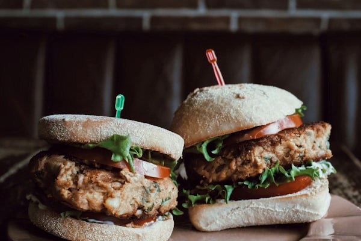

A unique, aromatic burger infused with Chinese five-spice powder, soy sauce, and melted cheese on a bean patty.

Tip: Tap items to check them off as you prep!
Follow steps sequentially. Mark completed steps to keep track.
To start making Five Spice Bean Burger, drain the beans to a medium bowl, reserving the liquid.Mash the beans using a potato masher.
Add bread crumbs, egg, pepper, garlic powder, soy sauce, sugar, lemon juice, cilantro, five spice powder with required salt.Mix all the ingredients until the mixture comes together.
Divide the patty mixture into equal portions and shape into patties by rolling the balls between your palms, and then slightly press them to resemble disc like shapes.
Heat a tablespoon of vegetable oil in a cast iron skillet over medium high heat.Place the patties and cook, turning once, until a crisp crust forms on both sides.Place the cheese slice on the top of cooked burger patty, once it starts to melt, turn off the heat and place the patty onto a plate.Meanwhile, cut the burger buns into half horizontally and toast them on a skillet.Once the burger buns are toasted, spread the mayo on each warm burger bun.Start layering the burger by adding lettuce then layer the cooked burger bean patties and cover with the top burger bun.Serve the�Five Spice Bean Burgers warm for a wholesome weeknight dinner along with�Baked Potato Wedge.
Followed by a dessert of�Greek Yogurt Chocolate Mousse Recipe.